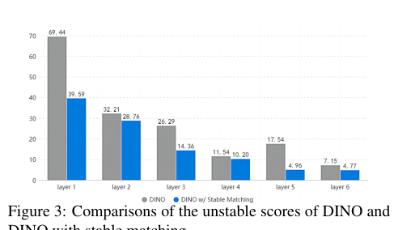
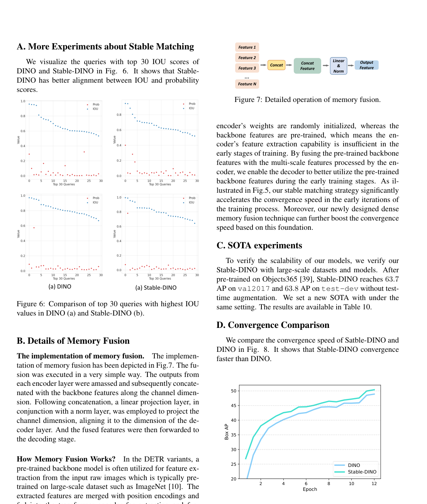
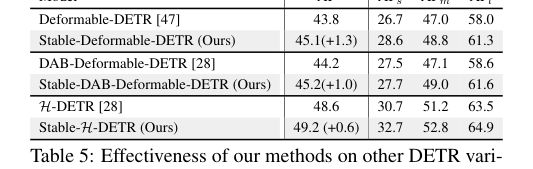

📄 Detection Transformer with Stable Matching¶
Stable-DINO：基于位置监督损失的DETR稳定匹配方法分析¶
概要（TL;DR）¶
- 核心问题：DETR类模型中的一对一匈牙利匹配策略存在“多优化路径问题”，导致训练不稳定和收敛缓慢。
- 解决方案：提出位置监督损失，仅使用位置度量（如IoU）来监督分类分数，消除优化冲突；并引入位置调制匹配成本和内存融合技术以加速收敛。
- 关键成果：在COCO基准上，Stable-DINO将DINO的AP提升了1.4个百分点（ResNet-50），且收敛速度显著加快，代码已开源。
📚 研究背景与动机¶
目标检测是计算机视觉的基础任务。以CNN为主的传统方法依赖锚框、非极大值抑制等手工组件。Detection Transformer (DETR) 的提出带来了革命，它利用Transformer架构和匈牙利匹配，实现了端到端的集合预测，消除了手工设计。然而，DETR也带来了新挑战，主要是收敛速度慢和性能欠佳。
后续研究（如Deformable DETR, DINO）通过可变形注意力、查询锚点、去噪辅助任务等技术改善了收敛性，但都未触及一个根本性问题：一对一匈牙利匹配策略内在的训练不稳定性。
本文指出，这种不稳定性的根源在于 “多优化路径问题” 。当两个不完美的预测（一个定位准但分类分数低，另一个定位差但分类分数高）竞争同一个真实目标时，标准匹配和损失函数会产生相互冲突的监督信号。模型会根据随机匹配到的预测，走上两条截然不同的优化路径，导致训练不一致且低效。
先前工作的局限在于，它们要么忽略了此问题，要么只是间接处理（如DN-DETR通过去噪任务），而缺乏对损失函数本身的原则性分析和修改。
本文的关键洞见是：在端到端的一对一匹配框架下，要确保训练稳定高效，正样本的分类分数必须仅由其定位精度（如IoU）来监督，而不能由其自身预测的分类分数来监督。这打破了循环依赖，消除了冲突路径，使DETR的优化目标与传统检测器（先基于位置选择正样本）重新对齐。

直观展示DINO与Stable-DINO在匹配稳定性上的对比
🔬 方法详解¶
Stable-DINO的核心是重新设计分类损失和匹配成本，以解决多优化路径问题。
1. 位置监督损失¶
传统DETR的分类损失（Focal Loss）强制所有正样本的分类分数趋近于1： $$ L_{\text{cls}} = \sum_{i=1}^{N_{\text{pos}}} |1 - p_i|^\gamma \text{BCE}(p_i, 1) + \sum_{i=1}^{N_{\text{neg}}} p_i^\gamma \text{BCE}(p_i, 0) $$ 其中 \(p_i\) 是预测的分类概率。
位置监督损失 则用位置度量 \(s_i\)（如IoU）的函数 \(f_1(s_i)\) 来替代固定目标“1”： $$ L_{\text{cls}}^{\text{(new)}} = \sum_{i=1}^{N_{\text{pos}}} \left(|f_1(s_i) - p_i|^\gamma \text{BCE}(p_i, f_1(s_i))\right) + \sum_{i=1}^{N_{\text{neg}}} p_i^\gamma \text{BCE}(p_i, 0) $$ 这里 \(f_1(s) = \varepsilon(s^2)\)，是一个凸函数变换。其物理意义是：一个预测的分类目标值应与其定位质量成正比（高IoU则目标值高），而非盲目追求1.0。
2. 位置调制匹配成本¶
在匈牙利匹配阶段，匹配成本决定了预测与真实目标的对应关系。标准分类匹配成本为： $$ C_{\text{cls}}(i, j) = |1 - p_i|^\gamma \text{BCE}(p_i, 1) - p_i^\gamma \text{BCE}(1-p_i, 1) $$ 位置调制匹配成本 将原始分类分数 \(p_i\) 用位置质量 \(s_i'\)（调整后的GIoU）进行调制： $$ C_{\text{cls}}^{\text{(new)}}(i, j) = |1 - p_i f_2(s_i')|^\gamma \text{BCE}(p_i f_2(s_i'), 1) - (p_i f_2(s_i'))^\gamma \text{BCE}(1 - p_i f_2(s_i'), 1) $$ 其中 \(f_2(s) = s^{0.5}\)。其作用是降低定位差的预测在匹配中的竞争力，促使匹配结果更倾向于定位准确的预测。
3. 内存融合¶
为了加速早期收敛，论文提出了特征层面的内存融合技术。由于Transformer编码器是随机初始化的，而主干网络是预训练的，早期训练时编码器特征质量不高。内存融合将主干网络提取的丰富特征与编码器输出进行融合，使解码器能立即利用预训练特征。

展示三种内存融合策略：(a)原始，(b)简单融合，(c)U型融合，(d)密集融合
三种融合方式（简单、U型、密集）均通过拼接和线性投影实现，不引入额外参数。实验表明，密集融合效果最佳。
📊 实验验证¶
实验在COCO 2017等标准数据集上进行，以平均精度（AP）为主要评价指标。
主要结果¶
在ResNet-50主干网络上（12轮训练）： - DINO-4scale基线：49.0 AP - Stable-DINO-4scale：50.4 AP （+1.4 AP） - Stable-DINO-5scale：50.5 AP （+1.1 AP）
在更大的Swin-L主干网络上（12轮训练）： - DINO-4scale基线：56.8 AP - Stable-DINO-4scale：57.7 AP （+0.9 AP）
提升幅度在目标检测领域被认为是显著且具有实际意义的。

展示Stable-DINO与多种基线方法在ResNet-50和Swin-L主干上的性能对比
消融实验¶
各组件贡献如下（基于ResNet-50）： 1. DINO基线：49.0 AP 2. + NMS (0.8)：49.2 AP （+0.2） 3. + 位置监督损失：49.8 AP （+0.6） 4. + 位置调制匹配成本：50.2 AP （+0.4） 5. + 密集内存融合：50.4 AP （+0.2）
位置监督损失是性能提升的最主要贡献者。
收敛速度分析¶
Stable-DINO，尤其是结合了密集内存融合后，展现出更快的收敛速度。在训练早期，其性能提升明显快于原始DINO。

对比DINO与加入密集内存融合的DINO的收敛曲线

对比DINO与Stable-DINO的收敛速度
泛化性验证¶
方法在多种DETR变体（Deformable-DETR, DAB-Deformable-DETR, H-DETR, MaskDINO）上均取得一致提升（+0.6 至 +1.3 AP），证明了其通用性。

展示方法在其他DETR变体上的有效性
可复现性评估¶
- 代码：已在GitHub开源 (
https://github.com/IDEA-Research/Stable-DINO)。 - 框架：基于detrex开发。
- 超参数：学习率、随机种子（60）、损失权重等关键参数已明确给出。
- 风险点：批次大小、具体硬件需求等细节未在论文中说明，需参考代码实现。
总体可复现性评分：中等偏高（7/10）。
💡 核心要点¶
- 直击根本：首次明确并系统解决了DETR类模型因一对一匹配导致的“多优化路径”训练不稳定问题。
- 简洁有效：核心修改（位置监督损失）概念清晰、实现简单，无需复杂结构改动，却能带来显著性能提升。
- 加速收敛：提出的内存融合技术有效利用了预训练主干特征，大幅加快了模型训练早期的收敛过程。
- 通用性强：方法不依赖于特定架构，在多种DETR变体上均验证有效，具有良好的可迁移性。
- 开源可复现：论文提供了完整的代码实现和关键训练细节，为社区研究和应用提供了便利。
🔮 未来方向与局限性¶
局限性： 1. 实验细节缺失：论文未报告批量大小、GPU需求、训练时间等工程细节，也未提供多次运行结果的方差，统计严谨性可进一步加强。 2. 比较公平性：部分对比实验中，Stable-DINO使用了NMS（贡献+0.2 AP）或训练轮数不同，需注意对比条件。 3. 理论深度：方法虽有效，但理论分析相对直观，更深入的收敛性理论证明是未来的方向。 4. 范围限定：方法主要针对DETR家族模型，其思想与传统检测器的结合潜力有待探索。
未来方向： 1. 理论拓展：为位置监督损失提供更严格的理论收敛性保证。 2. 跨范式应用：探索将“基于位置监督分类”的思想应用于其他存在匹配冲突的视觉任务，如实例分割、姿态估计。 3. 效率优化：进一步研究更高效的特征融合方式，或探索在训练后期动态关闭融合以降低计算开销。 4. 损失函数设计：研究更优的变换函数 \(f_1\), \(f_2\)，或将其设计为可学习的模块，以适应不同数据集和任务。